Version 1.0 | May 2025
Deep in the Caribbean lies a peninsula surrounded by water on all sides, called the Ape Peninsula. Venture into its dark grottoes, dense jungles, and well-stocked gift and souvenir shops to become a true buccaneer.
You'll have to face zombie ships, vampire pirate captains, talking shrunken heads, and plenty of apes, using your intelligence, your wit, and the powerful, sometimes explosive, magic of voodoo.
If you're lucky enough to avoid scurvy, you might just survive this adventure and find the greatest pirate treasure ever known, Mac’n Cheese, earning the respect of the entire Caribbean.
«The enigma of the Ape Peninsula» is a graphic adventure game for EGA, available on three 3.5-inch floppy disks. Its theme is humor and fantasy, and it was developed by LucasArts Games. To play this adventure, you only need the Basic Rules for «Point and Click RPG».
The first part of this adventure (Disk 1) is the introductory adventure included in the basic rules, so if you've already played it, you can skip it.
Once per game session, one of your players can spend 2 pixels and use the "Look behind you… A three-tailed ape!" trick. After saying the phrase, the player must roll a d6.
On a roll of 6, the other target turns around to face the three-tailed ape, and all players can perform an action, such as picking up something the target was holding, fleeing, or going through a door.
This trick only works with NPCs you can talk to, and it always fails when there is actually a three-tailed ape behind you.
Your PCs have just arrived in Bucan Ville, a pirate haven, with the intention of becoming pirates themselves and making a fortune through piracy.
This part is divided into four scenes. The first will be a brief introduction. Then there will be two parallel scenes: one in which the Pirate Lady Bosses grant them the pirate degree after they pass a test, and another in which they acquire a ship and its flag. The fourth scene will be the heist of the governor's safe.
The PJs appear at nightfall in the harbour of Bucan Ville and will shout «My name is [PJ name] and I want to be a pirate».
In this filthy, seedy harbour, there's only one place to go: the Boiled Crab Tavern, a pirate's den where the grog is watered down and the snacks and peanuts were once Blackbeard's cabin boys.
In the distance, a ship with tattered black sails can be seen. An eerie glow floods its deck, and flocks of bats circle overhead.
From the port, you can access Bucan Ville Town Center.
The place is a dingy old dive, packed with drunken pirates. The few who aren't sleeping off their hangovers can barely manage a sentence:
At a large table in the back sit the 3 Pirate Ladybosses. The most powerful pirates of Bucan Ville, chosen by the democratic method of slaughtering all their competition.
These three rude pirates are at the table, drinking grog and singing bawdy songs. When your players explain that they want to be pirates, they'll laugh a lot and tell them to stop wasting their time and go back to what they were doing.
Your players will have to prove they really want to be pirates by answering questions like these:
They'll also make them sing "Yo Ho Ho and a bottle of rum" (which your players will have to sing). After a while trying to prove they deserve a test, they agree to take the standardized pirate guild exam, which consists of two tests:
After explaining the standardized tests, they will be asked to sign some paperwork and given a discount voucher for the Souvenir Shop. If they ask for any hints, they will simply be told to ask for Sam at the shipyard to see what they can offer in terms of ships.
On the table of the three Pirate Ladybosses, there is a fruit bowl with oranges, bananas, apples, Swiss vitamin C candies, and lemons, which they claim are from their scurvy eradication campaign.
If they ask, they can take a piece of fruit. Choose one at random and give it to them. If they eat it, they can ask for another. Until they finish the other piece of fruit they took, the Pirate Ladybosses will tell them to finish it first.
As the Pirate lady Bosses explained, to become a pirate, you need to be on the other side of the law and have proof of it.
There are several ways to commit crimes:
If you see them getting lost at this point, emphasize the "other side of the law" part or remind them of the drunken pirate in the Boiled Crab Tavern who claimed to have invented the ape-traffic light and ask them for a clue.
The streets of the Town Center are deserted at night, the gas lamps are lit, and the shops are closed—all except the souvenir shop with its large neon sign that reads "Open 24 Hours."
To cross the street that runs through the center, you have to go through a pedestrian crossing controlled by a ape-traffic light and watched over by a city guard who only says, "Move along, move along!" The ape-traffic light is operated by a ape that changes the color of the light by moving levers. When you approach, the ape moves the levers, and you always cross on green.
No matter how hard you try, the ape always sets it to green. The only way to cross on red is to give to the ape a banana when the light is red, and as it eats the banana, it stays red. At that moment you can cross and the city guard will give you a fine and, therefore, you will be an outlaw.
The Plaza Mayor is like all plazas, a large, empty cobblestone space with a single dead tree in the center bearing a sign that reads "Tree for Hanging Pirates - Closed for Renovations."
Next to the tree is a painter who is painting the town hall. He paints the pictures at lightning speed and leaves them in a pile beside him. If you examine them closely, you'll see they aren't very good.
If you try to talk to him, he'll tell you he's very busy; he has to paint 1,000 identical pictures of the town hall for the fundraising campaign for the governor's reelection.
Next to the town hall is the courthouse. As you approach, you'll see that it's open from 24:00 to 00:00, except on weekends when it's closed. If you stand to its left before the painter starts a new painting and wait until they finish, you can pick up a painting that shows you next to the courthouse—that is, on the other side of the law, just as the Pirate Ladybosses requested.
On the other side of the town hall, you can access a dark alley from which random snippets of a conversation emerge.
It's just a trap. When they enter, the voices will fall silent and figures will vanish into the shadows. As soon as they step back out into the plaza, the voices will return.
The only place on the island that sells boats is the shipyard, and the only one your players can afford right now is a rowboat. The problem is, it's not self-propelled, so they'll have to find a way to make a sail for it.
For the sail fabric, they just need to get the Twister vinyl from the souvenir shop. The mast will simply be one of the oars, and they'll have to tell Sam, the shipyard manager, their idea.
They might waste pixels converting non-clickable elements into clickable ones, like rugs, sheets, etc. When they take it to Sam, he'll make up some silly excuse.
If they present the rowboat's title deed to the Pirate Ladybosses without a sail, they'll fail the test, shouting in unison, "It's not self-propelled!"
The flag isn't a challenge; let them use whatever they find to make their flag, and if you can make it as ridiculous as possible, even better. They can use the discount voucher at the souvenir shop, and the shop assistant can give them any silly thing you can think of to use for their flag.
From the Main Square, you can access the Bucan Ville shipyards, where your players can acquire a boat they can afford.
There they'll find Sam, a nautical geek with thick glasses and a t-shirt that says, "Kiss me, I'm a model ship builder."
Sam lives to design and build ships... to scale (he always says this quietly), and since he hasn't been able to dedicate himself to building them, he sells them.
Despite being a main character and being able to talk about many topics, Sam only talks about ships, ship design, the history of navigation, nautical trivia, etc. If you try to talk about something else, he steers the conversation back to ships.
If they tell him they want to buy a ship, he'll offer them what he has in stock: a luxury pirate ship, a second-hand pirate ship, and a fishing boat. When your players explain their financial situation—that is, 0 doubloons—he'll take them to one side of the shipyard and show them an old rowboat with a broken oar.
Sam will say that the **luxury pirate ship costs so many gold doubloons that only by robbing the _governor's safe_** could they afford it, but it's pure luxury. In fact, the wheel even has its own ebony coaster. The problem no one saw coming is that when you turn it, it flips over and spills all the drinks.
After tough negotiations, Sam will agree to 200 gold doubloons to be paid with their first act of piracy and plunder. He'll give them the title deed to the rowboat and a pile of papers specifying the payment method, which they mustn't lose.
To make it self-propelled, they'll need something to serve as a mast and something to serve as a sail. There's a strike by sailmakers and mast makers, and he's out of them, so your players will have to find something to replace it.
As we've already mentioned, for the sail they'll need the Twister vinyl decal and for the mast the oar that isn't broken. With these, Sam will assemble some sails and change the description on the title deed.
Maxine the Red, the red-haired terror of the Caribbean, retired from piracy and used her earnings to open a souvenir shop selling famous pirate memorabilia in Bucan Ville. In her shop, you can find the most outlandish items from the pirate world, from a lock of Blackbeard's beard to Sir Francis Drake's mouthguard.
When customers try to buy a clickable item, Maxine will tell some strange story to discourage them, such as that it's riddled with woodworm or belonged to a leper.
The only thing in the shop that could serve as a sail is a Twister vinyl Pirate Edition with skulls, crossbones, treasure chests, and cannons instead of the colored circles.
Like most things in her shop, she doesn't want to give the Twister vinyl because it reminds him of when he used to "play" (wink, wink, knock, knock) Twister with Anne Bonny, Jack Rackham, and Mary Read aboard the "Ranger."
The discount voucher the Pirate Ladybosses gave them has a typo, and if you take Lulock Holmes's magnifying glass —Lulock Holmes being Sherlock Holmes's Caribbean cousin and the first pirate detective in literature— you can read the fine print. Where it should say, "Presenting this voucher will get you a 50% discount on pirate merchandise OR a 50% discount on board games," it actually says, "Presenting this voucher will get you a 50% discount on pirate merchandise AND a 50% discount on board games."
So they can use the discount voucher to get the Twister vinyl completely free and Maxine can't refuse because the truth is that it's the most useless and cheapest thing she has in the store.
Ideas for other silly and weird things you might have in the shop that you could add as clickable items, but that Maxine doesn't want to sell because they bring back fond memories:
Players can submit proof of their pirate status simultaneously or separately, but until they've fulfilled both requirements and proven it, they won't be considered full-fledged pirates. The Pirate Ladybosses will only refer to them as cabin boys and/or landlubbers with mocking laughter.
After acquiring their ship and being on the wrong side of the law, the player characters can apply for their official _Pirate Certificate, which identifies them as pirates, after paying the corresponding fee of one gold doubloon. You can use this as an opportunity to introduce new challenges, such as searching for loose change under the tavern's jukebox.
Throughout the previous scenes, your players will have heard about the governor, his safe, and the vast amounts of money he keeps inside. Since they can't board ships with their rowboat, they'll need to find a way to rob the governor so they can buy a real pirate ship.
When they leave the Boiled Crab Tavern, you can tell them that they can access the governor's house from the harbor. In fact, there's now a giant neon sign at the harbor that reads, "Visit Governor Marlon's Museum, where the magic of democracy happens."
Governor Marlon's mansion is a Victorian home perched on a cliff overlooking the Caribbean Sea. It is luxurious and well-maintained; surely the upkeep and luxuries, such as the equestrian statue of Governor Marlon, are paid for with the taxes of all the residents of Bucan Ville.
Examining his statue, Governor Marlon is a good looking human: long hair, a chiseled chin with a divine dimple, broad shoulders, a torso sculpted from stone, and powerful arms and legs.
The exterior is guarded by peacocks that gobble loudly as soon as they see you. Then a light on the second floor comes on, and Governor Marlon goes to the window to keep watch, armed with a black powder rifle. When he sees nothing suspicious, he goes back inside.
If you hide behind the equestrian statue and hit them when they're not looking in your direction, you can take a feather from each of them. When you have three feathers, you can make yourself a peacock headdress, and the peacocks will consider you one of their own and let you pass without informing the governor.
Upon entering the Governor's Mansion, you'll find yourself in the main hall. It's large and luxurious, filled with artwork, expensive vases, ivory figures, and so on. The hall is dimly lit by a few candles in a large chandelier.
If you try to pull/push the pulleys that raise and lower the chandelier, they will creak, and you'll see lights from the upper floor and hear the sounds of Governor Marlon loading his rifle. This makes it impossible to lower the chandelier while it's making noise; you need some kind of lubricant.
Let them search the screens for something non-clickable that can serve as a lubricant, like the grog the Pirate Lady Bosses drink, the turpentine the painter in the Main Square uses, etc., and make it clickable with their pixels.
The basement is dark, and the only visible feature is the large safe door, covered in a multitude of locks, combination dials, and gears. It appears incredibly complex—so complex, in fact, that Governor Marlon has left a note hidden in a specific pixel on the screen with instructions for opening it.
There is very little light in the basement, and the exact pixel can only be found if light is available. The only light source will be the candles in the chandelier in the main hall. If they try to bring in a light source from elsewhere (by making something clickable), make it difficult for them, as these will be electric or gas-powered.
Once they've managed to break into the governor's vault and are swimming in gold and jewels, they'll hear a loud cannon blast, and suddenly a cannonball will shatter one of the walls.
As they recover from the explosion, they'll see the fearsome vampire captain DraChuckla enter through the hole with his ghoul henchmen to seize their loot while laughing at them.
He'll approach the player characters, pluck a hair from each of them, and stick them to voodoo dolls, saying, "Just in case you become a problem," and then they'll fall unconscious.
When they manage to get up, they'll see through the hole in the wall that the black-sailed ship that was in the distance from the port is sailing away with DraChuckla on board and Governor Marlon tied and gagged.

In this second part, your players will have to overcome three more scenes. The first will be a quick scene in which the Pirate Ladybosses task them with rescuing Governor Marlon, as he owes them a lot of money for work they've been doing for his upcoming election campaign. Luckily, they'll be given a dilapidated ship they use for tourist shows.
In the second scene, they'll have to venture into the Island's swamps to find Alfonsé, the voodoo count of the swamps, so he can explain how they can defeat DraChuckla and how to reach Ape Peninsula, where the fearsome vampire is supposedly searching for Mac’n Cheese.
According to Alfonsé, the only way to defeat Captain DraChuckla is by using the Coronado Cross, which is part of the Mac 'n Cheese treasure. So they'll have to find the treasure before their terrible enemy does.
In the third and final scene, they must cross the Caribbean Sea to reach the **Ape Peninsula, following the instructions of the oracle bones_ given to them by the Voodoo Count.
So what now? Your plan to rob the governor has fallen through, so we'll have to come up with a plan B.
Remind them of what Vizzini from Princess Bride used to say: «When a job went wrong, you went back to the beginning.» So they should head over to the Boiled Crab and see what the barflies are saying.
Boiled Crab tavern is still just as dirty and filthy, and in the background, the three Pirate Lady Bosses are talking amongst themselves. It seems they've been doing «jobs» for Governor Marlon's pre-election campaign and haven't been paid yet, so they're more interested in saving the kidnapped governor and the money DraChuckla stole.
As soon as they see them approaching, they'll see an opportunity to saddle some poor, unsuspecting players with the mess. So, with a lot of smooth talk, they'll offer them a real ship for their piracy if they agree to rescue the governor and recover the lost money.
They'll pull out a contract for work and service with super small print, which they could only see with the Lulock Holmes magnifying glass that Maxine the Red has in her souvenir shop and which she won't let them take, but it might be fun for them to try until they get bored and sign the contract.
The contract stipulates that they must save the governor and his riches from the clutches of DraChuckla, who is currently in the lost Ape Peninsula (lost because nobody knows how to get there).
To encourage them to sign, they'll be told that they might find the mythical treasure, Mac’n Cheese, since DraChuckla is searching for it right now on the peninsula, and if they find the vampirate, they might just stumble upon the treasure as a bonus.
Finally, they'll tell you to go talk to the Voodoo Count, Alfonsé, at the swamp for more information about DraChuckla and the Ape Peninsula.
In one corner, there's a very drunk young guy wearing a t-shirt that says, "Problems? Alfonsé, the Voodoo Count, is the solution." He looks like a leaflet distributor hired by Alfonsé.
Now you can find the Kraken's Puke in the harbour, the pirate ship that the three Pirate Ladybosses have given you. From a distance, it looks impressive, but when you board it, you'll see that it's all cardboard and a trick. In fact, they've only painted one side of the ship because that's the only side tourists see when it passes by in the distance.
On the main deck, you'll meet Miss Bridalis. Bridalis works for the Bucan Ville Tourism Development Commission, which is part of the Bucan Ville Pirate Guild, run by the Pirate Bosses. Bridalis is in charge of the ship's maintenance and putting on pirate shows for the tourists who visit the island.
During the shows, Bridalis moves incredibly fast, changes outfits, and uses different voices, so from the outside it looks like the ship is full of crew, but she's the only one piloting it. She has several famous pirates she can perfectly imitate and for whom she has excellent costumes.
She speaks with a very strong pirate accent and is so immersed in the role that if you don't speak to her with the same accent, she won't understand you.
Bridalis will tell them that the ship is ready to set sail, but first they should find out or get some clue about where the Ape Peninsula is. Perhaps the powerful voodoo count Alfonsé, who lives in the swamp, can help them. He made a hairy wart on his mother's back disappear, so his effectiveness as a sorcerer is proven.
The only way to get to Alfonsé hut is to get one of his flyers explaining how to get there. The problem is, the distributor he hired has already given them all out and can't give any to your players. In fact, he threw them all in the swamp and went to get drunk with grog at the Boiled Crab.
No matter how hard you look, you won't find any more of Alfonsé's flyers; there's only one, and it's in the souvenir shop.
The only leaflet you can get right now is one signed by the famous pirate François l'Olonnais for Maxine the Red. She keeps it in a display case in her souvenir shop like it's royal jewels. She doesn't want to sell or lend it.
If you try any tricks with the discount vouchers, she'll show you they've expired and you can't use them.
The only way she'll give you the leaflet is if you get her a signed photo of another famous pirate, for which she'll give you a Polaroid camera. And the only way to get a photo of a famous pirate is to have Bridalis put on one of her famous pirate costumes and then sign the photo. She gets so into character that she even knows how to sign her name like them.
Depending on the photo they receive, Maxine should invent some scandalous/spicy story she had with the person in the picture.
If they get creative, they might even convince Alfonsé, the Voodoo Count, to hold a séance for them with a famous pirate and have her sign something while possessing the medium.
The swamp is a labyrinth that is impossible to navigate without the proper directions, namely, Alfonsé's leaflet. If you enter without it, you will navigate through three screens with four exits before finally escaping the swamp.
There's nothing in the swamp to mark the way, but if you want to keep them entertained, throw in a few red herrings. You could place a special-colored herb along one of the paths or a crocodile that escapes through an exit when the players enter. They'll try to figure out the logic and recreate it.
If they have the leaflet, they simply have to follow the directions. There will be three directions: North (up), South (down), East (right), and West (left). On the fourth screen, they'll reach Alfonsé's lair.
If you want to make it more challenging, you could have them enter any swamp screen from the right, and the directions must be referenced to the entrance. That is, if they first enter from the north (up), they'll appear on the right, meaning north would be exiting to the left instead of from above, east would be above, west below, and south the way they came.
Your players might think outside the box and try to sober up the leaflet distributor so he'll tell them the way to the lair. It's an interesting option, and you could, for example, have Sam have a giant coffee pot in the shipyard.
Upon leaving the swamp, they will reach a marshland so dense that it barely lets the light through. On a throne shaped like a skull, surrounded by lit candles, incense burners, and piles of voodoo paraphernalia, sits Alfonsé, the voodoo count of the swamps. They is a powerful sorcerer who can turn your players into chickens for a few seconds if they are rude to him.
They's a real show-off and likes to boast a lot about his voodoo powers, saying that there's no one with his powers and knowledge, that they alone could take on DraChuckla, but then they'd leave Bucan Ville unguarded, that he could find the Mac'n Cheese, but money isn't their motivation, etc.
After going around in circles with the conversation, if they are persistent, they will get all the necessary information out of him:
As we've already mentioned, if your players are rude, they can turn them into chickens for a few minutes. The chicken can be inserted into the equip as and item and will quickly revert to human form. They'll probably try to solve a challenge with this option, and if they're creative, they could use it.
The Voodoo Count is very insistent that the bones are "bones of the oracle," not "oracle bones" (wink, wink, nudge, nudge). Basically, they're human bones, specifically from a seer named Tom «the visionary» because he said that in the future there would be no coins, only «bits of coins».
As an aside, at the beginning of the screen there's a trash can full of Alfonsé's pamphlets that the leaflet distributor threw away.
This scene is a puzzle in which you will need to use the bones of the oracle. The bones are nine six-sided dice with dots instead of numbers. To summon the oracle, you must obtain the following shape, which represents a skull. At that moment, the oracle will appear and guide you to the Ape Peninsula.
The GM must roll the dice and form a 3x3 grid. The players must then say how many moves they need to make to create the drawing.
One move consists of moving one die to a face and rotating another die 90 degrees. Then, you must draw the skull using the exact number of moves. You can undo a move by spending one pixel.
If they succeed, the bones will come to life and Tom «the visionary» will begin to speak. He speaks like a genie in a lamp, using phrases like «As my lady commands» or «As you wish».
Tom «the visionary» can answer three questions. One will be used to determine the coordinates of the Ape Peninsula, and the other two can be used for any other purpose. However, he can only answer while his bones are in position. As soon as they are separated or the dice are moved, the oracle will vanish and cannot be summoned again.
If they follow the coordinates given by Tom «the visionary», they will reach the Ape Peninsula. From this moment on, they can return whenever they wish.
New locations are in cursive.

New locations in orange
Your players have reached the Ape Peninsula and are about to discover that «The Walker», DraChuckla's ship, is anchored nearby in a small cove. So they'll have to find another place to disembark.
On this third floppy disk, you must complete the last three scenes. First, you must find the Mac’n Cheese before Captain DraChuckla and obtain the Cross of Coronado.
Later, in the second scene, they must infiltrate The Walker, DraChuckla's zombie ship, and recover their voodoo dolls, since with them in the possession of their enemy, they are defenseless against the powerful magic of the evil vampirate captain.
Finally, they must face DraChuckla in single combat and use the Cross of Coronado to kill him—and kill him good. We don't want any sequels here, do we?
Your players have arrived at the coast of the Ape Peninsula and the first thing is to find the great pirate treasure and get the Cross of Coronado.
The first task is to find the cave where the treasure is hidden without getting lost in the jungle labyrinth. And this time, unlike with the swamp, there won't be a map.
They'll have to discover the key: doubloons placed on a exact pixel that mark the route.
To access the treasure, which is at the bottom of the cave, they must pass through 3 screens and solve a small puzzle on each one.
At the bottom of the cave, on top of a mountain of gold ingots, is the Cross of Coronado, but climbing the pile of ingots**_ and getting the cross will be another challenge.
If you want to simplify things, you can have The Walker sink your players' ship, The Kraken's Puke, so they can't leave the peninsula. This prevents them from going crazy trying to travel to Bucan Ville for this part.
Your players, along with Bridalis, will disembark on the beach. The beach is idyllic, with sand and palm trees, perfect for sunbathing while lying on the sand and drinking grog. You can collect seaweed from the ground, although it's dry and smelly. While your players enter into the jungle, Bridalis will stay on the beach looking after the boat.
Each time they enter the screen, Bridalis will have a new costume and will be doing one of these activities:
If they seem really lost, you can give them some of the items Bridalis is using; for example, the metal detector can help them in the jungle. You can also fill their equipment with junk they won't need or be able to use.
If they use the boat, they can return to Kraken's Puke and from there to Bucan Ville.
The dark jungle is a maze. As in the swamp, they'll move through jungle areas with connections above, below, left, and right. After moving through four areas, they'll return to the beach.
The only way through the maze is to follow the trail of gold doubloons that mark the path to the treasure cave. The doubloons are hidden in exact pixels. If they have a metal detector, you can give them a bonus for finding the exact pixel.
If you find the four doubloons and follow their directions, you will reach the entrance of the cave. From that point on, when you enter the jungle, you will arrive directly at the entrance of the cave.
The entrance of the cave is a gigantic stone ape head and is guarded by a bunch of apes who snarl at you and throw poop if you get too close.
If you look closely, the apes always throw their poops in the same three areas, and they grunt before throwing them. The poops splash when they fall, so the areas where you can get messy are quite large.
After each round of poop throwing, while they get new ammunition (take it however you want), your players can go through a splash zone and stay in a protected zone.
Thus, step by step they will be able to advance towards the ape head and once they are in front of the bunch of apes they will flee in terror.
You can ask them to roll to remember with milimetrical precision whether they're in a splash zone or not. Give them bonus points if they think to leave something like stones to mark them, and negative points if they try to speed through.
If one of your players gets pooped on, she'll run to the beach to clean herself up, and her teammates will go with her. Remember, they can't separate and must always stay on the same screen.
Once the poops impact, they disappear without leaving any track that your players can use to trace a safeway.
In this first chamber, there are 3 ape statues, each with a different gesture: one covering its ears, another its mouth, and the third its eyes. Above each statue is a small ape that mimics any of the gestures. If they advance and any monkey's gesture doesn't match that of its statue, as soon as they pass the 3 statues, the ape trigger a spring, raising a wall that blocks their path.
The apes mimic the actions of the person in front of the statue, so, for example, when they stand in front of the one with its ears covered and cover their eyes, they will cover their eyes. The rest of the monkeys automatically change their behavior following these rules.
The solution is simple, but you have to discover the movement of the gestures.
| 1st statue | 2nd statue | 3rd statue | |
|---|---|---|---|
| Statue gesture | Ears | Mouth | Eyes |
| Initial ape gesture | Eyes | Mouth | Ears |
| 1st statue ears | Ears | Eyes | Mouth |
| 3rd statue eyes | Mouth | Ears | Eyes |
| 2nd statue mouth | Ears | Mouth | Eyes |
If you place each ape on its statue, it won't jump over the wall and you'll be able to advance. The gestures are retained even if you go off-screen.
In the second chamber, there's a large precipice and a log that seems too short to create a walkway across. There are several possible solutions.
The third chamber is a long corridor that appears empty, but as they try to pass through, a huge blade will spring from the ceiling, nearly slicing them in half, preventing them from getting to the other side.
When the blade is activated, a ape's scream is heard coming from a hole in the wall ahead, so a little ape is surely watching from that trapdoor and triggering the blade. They can't approach the hole because the blade will spring, so they can't interact with the ape.
The chamber is so long that there is scrolling on the screen from left to right, and the trick to this screen is to use that scrolling to get through the blade.
If your players are together, they'll be in the center of the screen. When they reach the point where the blade is, the hole in the wall will be on screen, and the ape watcher will see them and activate the blade.
If they're moving forward, one player on each side of the screen, when the player on the right reaches the blade, the hole in the wall won't be on screen (since the other player is scrolling to their side). Therefore, the watcher won't see them and can't activate the blade.
Once a player has passed the blade, they can scare the ape away from the hole, allowing the rest to pass.
They can also talk to the creator of the ape-traffic light again and get a hint about how the ape-blade works.
In this great chamber there are big piles of gold coins, jeweled scepters and crowns, and diamonds, rubies, and emeralds as big as melons. They can fill their entire equipment with riches of all kinds if they wish.
They've found the great pirate treasure, but getting the Cross of Coronado is no easy task. The cross sits atop a pile of gold ingots, but if they try to climb the pile to reach it, they slip and fall to the bottom.
In a first moment, they would need some kind of climbing equipment or some kind of invention that would allow them to grab the cross from a distance, but Nothing could be further from the truth.
The only option is for them to take the ingots from the mountain and add them to their equipment to make the mountain smaller so they can climb it easily. They'll need to remove at least 20 ingot equipment spaces to reduce it to a manageable level. The problem is that with all that gold, movement is nearly impossible. Taking even one ingot will paralyze them, preventing them from moving and climbing. If they drop it, it will return to the pile, which will grow again, making it impossible to climb.
The trick to this challenge is to give the ingots to a teammate on the opposite side of the player, who will then drop them to the other side, creating another pile. This allows the first player to move and take the cross.
With the cross in their possession, the next step is to confront DraChuckla, but first they must recover their voodoo dolls. Your players can go directly to confront DraChuckla without having recovered their voodoo dolls, but as soon as she sees them, she will summon a zombie that will enter with the dolls and begin to pierce them with needles, forcing them to run away and return outside the ship. They will have to restart the ship infiltration from the beginning.
Back on the beach, having obtained the Cross of Coronado, they can use the boat they came ashore in. They can leave the cove where their boat is and go to the anchorage of The Walker, DraChuckla's black-sailed vessel.
This scene will take place on The Walker. As king of the undeads, DraChuckla has turned all his victims into zombies and enlisted them in his crew. They aren't very efficient or fast, but they're hard to kill, they don't need water or food, and you don't wage them every month. It's all advantages!
If the undead detect them, they'll attack, and they'll have to leave the ship and start from the beginning, just like when DraChuckla uses the voodoo dolls.
Your players can approach the hull of The Walker near its anchor, which it has dropped into the sea. The hull is covered in barnacles, limpets, and mussels that can be collected.
There is no test or challenge on this screen; simply climb the anchor chain and enter the lower deck.
The lower deck is teeming with zombies wandering back and forth. The screen has a very long scroll. The hatch they used to get in is on one side of the deck, and the ladder to climb up is on the other.
The zombies only say typical zombie phrases, like "Brainyyyy," "Chomp chomp," or "Maaaaaaaa," and they keep moving randomly around the deck.
The zombies are filthy and smelly, so if they're clever, they could smear themselves with the limpets, barnacles, and mussels from the hull and make some kind of algae disguise of the beach. That way, the zombies on the lower deck shouldn't bother them.
The upper deck is also full of zombies, but these seem more intelligent, performing simple tasks like sweeping the deck or tying and untying ropes.
This screen is also long, scrolling from the staircase leading up from the lower deck to the door of the poop deck.
This time, simply wearing the smelly remains of the hull-hulled seafood won't be enough. They'll need to grab something like a mop or a brush and clean the deck, or take a rope and haul it across.
Have them roll to deceive the deck zombies, and you can give them positive or negative scores depending on their performance—whether they make zombie sounds, speak like humans, etc.
The poop check is a room that serves as a storage area for odds and ends, maps, navigational tools, various trophies, and all of DraChuckla's voodoo paraphernalia, such as talking shrunken heads and your players' voodoo dolls. In one corner, there's a bunk for the zombie Chief Officer and a trunk containing his belongings.
The mission on this screen is to collect the voodoo dolls so that when DraChuckla wants to use them, he can't. The dolls are in a locked display case with other voodoo objects. The problem is that when you try to open the display case, 3 talking shrunken heads on top of it start shrieking, and the whole place is swarmed with zombies, forcing your players to jump into the water through a hatch to escape.
There are several ways to do this.
Por si tienen alguna idea genial y/o mirando su equipo inventan algún tipo de artilugio para robar los muñecos, debes tener en cuenta que si tocan el cerrojo, las cabezas dan la alarma y si se tocan las propias cabezas, también dan la alarma.
Con los muñecos en su poder podrán entrar en el camarote de DraChuckla y enfrentarse a él sin miedo.
Esta escena es la batalla final contra el terrible DraChuckla. La batalla es un duelo de ingenio y habilidad sin parangón que pondrá a prueba todas las capacidades de tus jugadoras ... Qué va, mentira. Va a ser una cinemática chusca y pista, que los disquetes están caros.
DraChuckla les espera tocándole al Gobernador Marlon una de sus piezas musicales tremendamente tétrica en un gigantesco órgano en su camarote. Viste su capa de vampiro que tiene un vuelo estupendo y va con su gorro de capitán pirata. El gobernador está atacado y amordazado
Cuando entren, llamará a su primero de a bordo zombi para que les traiga los muñecos vudú y acabar con tus jugadoras, pero si han hecho bien los deberes, el primero de abordo aparecerá y le dirá «Mi señor, los muñecos no están».
Aquí empezará la batalla entre jugadoras y el temible capitán DraChuckla. Puedes enfocarlo como quieras, pero la idea que te ofrecemos es que sea una especie de cinemática donde DraChuckla se acerca a tus jugadoras soltando amenazas tipo «Voy a chuparos la sangre» o «Me daré un festín con vuestra vitae». Ellas sacarán la cruz de Coronado que empieza a brillar. La luz que emite la cruz quema al vampiro que empieza a convertirse en cenizas y muere.
Si quieres pueden quitar el monólogo y poner un diálogo con zascas entre DraChuckla y tus jugadoras. Si le dan buenas réplicas, se irá enfadando y acercando hasta ponerse cerca y poder sacar la cruz.
Otra opción tremendamente insatisfactoria, es que tengan que sacar la cruz en el momento justo. Si lo sacan antes de tiempo, DraChuckla saldrá volando sin haberlo podido matar. Si lo hacen demasiado tarde, se cubrirá con su capa y les quitará la cruz de un manotazo para proceder a convertirlas en sus esclavos zombis.
After defeating DraChuckla and freeing the governor, you can return to Bucan Ville where you'll be welcomed as heroines by the citizens. If you've collected any treasure, you'll return rich.
The governor will promise you a political position if you help him get re-elected, and you'll see that the governor is exactly as he appeared in his equestrian statue.
There will be music, parties, dancing, and grog galore, culminating in fireworks that no one knows where they came from. Let each player say a solemn phrase as the fireworks explode, and…
Suddenly, the screen will shift back to DraChuckla's cabin where his ashes will begin to glow while ghostly organ music plays, before transitioning to the adventure's credits and a «The End».
If your players ask you at the end of the adventure what the enigma of the Ape Peninsula is, you can tell them that the enigma is that it is actually an island, something that was already mentioned in the introduction of the adventure.
Kraken's puke
↕
Beach↔Jungle↔Entrance cave↔1st chamber↔2nd chamber↔3rd chamber↔Treasure chamber
↘ Outside The Walker ↔ Lower deck ↔ Upper deck ↔ Poop deck ↔ Cabin
«The enigma of the Ape Peninsula» is an adventure for the point-and-click RPG written by @gwannon and licensed under CC BY 4.0. You may use all of this material as you wish, even commercially, except for images and fonts, which belong to their respective creators and are properly attributed. To use this material, you only need to attribute it appropriately.
All the content for this project can be found at pointnclick.gwannon.com, and all the source code is available on GitHub.